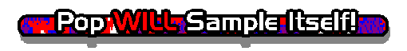

Table Of Contents
Introductory Junk:
Background info on the Sample List
Commentary by list-minder
Acknowledgements
Guide to list format
(Start here if you're lost...)
Current notes for this version of the list
The Goods:
New Entries for this version of the list
List of Releases
Major Sample Sources
Prolific Contributors
Heroes & Icons (Influences)
Turnabout Is Fair Play - Other artists sampling PWEI
Download PWSI!
More Junk:
Disclaimer
Resources
Online Sample Submission
End Page
Skip the crap! Get me to the
Sample Listings!
Go back to the
Proceed to the
section of the List.
![[Next]](next.gif) section of the List.
section of the List.